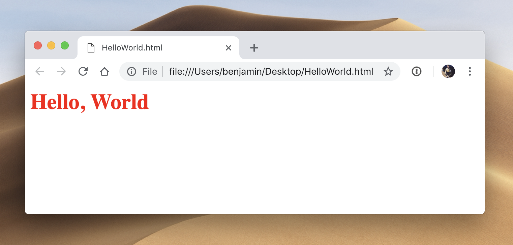

Intro to Coding Concepts
or
What is that Web Developer talking about?
Thank You
This curriculum originated from the Girl Develop It Intro to Web Concepts Curriculum
This is made possible by Open Source Software
What we'll cover in this class
- Hardware & Software
- Programming languages
- Brief intro to Data Science
- Building a web site
- Web development professionals
Plus terms and definitions throughout
What to expect
- This is a survey of a very broad topic
- Get a sense of what you'd like to know more about
- Write some code and see it working in your browser
- I don't know everything, and neither will you
- Have fun! (and ask questions)
- Expect a survey following the class to determine what you'd like to learn next!
What is the world wide web?

How does the web work?
Let's take a tour! A typical web site will live or is "hosted" on a web server. Web servers are often large computers connected to a network.

Photo credit computerroom085 cc
Step 1: Type an address into the address bar
Step 2: Your computer looks up the website's IP address
Each website has a unique code, called an IP address, like a street address.
A good way to think of the basics of how the web works is to think of a restaurant.
Think of the web site and the IP address as the address of a restaurant.
Step 3: Your computer connects to the server
Your computer uses the IP address to find the correct web server and sends a request for a page.
A DNS lookup is like using your GPS to find a restaurant.
A DNS lookup gives your computer directions on how to find the server that hosts the website you are looking for.
Step 4: Your computer requests information from the server.

You're at the restaurant and your waiter comes to your table. "What would you like today?"
"Hello! I would like your finest HyperText Markup Language(HTML) with a side of CSS and JavaScript"
Step 5: The server gets your computer's request
The kitchen (server) uses serverside code
and a database to crunch the data you want and prepare to send it back to you.

Step 6: The server sends its repsonse over HTTP
The server converts its response to HTML/CSS and JavaScript so that your browser can understand it and sends it back to your computer.

Step 7: Your browser displays the page
Your browser interprets the code and assembles all the files into a page you can see and use. Doesn't that taste delicious?

Exercise: your first web page
To your computers!
Step 1: Open a text editor
Visual Studio Code, Sublime Text, or Atom are all good choices. You can also use Notepad (on Windows) or TextEdit (on Mac), which are basic but come preinstalled
Step 2: Create an empty file
With most editors CTRL-N (⌘-N on Mac) creates a new file
Save the file to your desktop, and call it HelloWorld.html
Step 3: Write some HTML code
Type the following text exactly into HelloWorld.html:
<h1>Hello, World!</h1>Save the file.
Step 4: Test your code
Open HelloWorld.html in your web browser. (Usually you can double-click the file, or drag it
into a browser window. Ask for help if it doesn't work!)
It should look something like this:

Step 5: Edit your code
Let's change the appearance (or style) of your page. In your editor, change the text of
HelloWorld.html:
<h1 style="color:red">Hello, World!</h1>Reload your browser. It should look like this:
Experiment with changing the style or the text.
Client Side vs. Server Side
- Client Side: Stuff happening on your computer independently of the server
- Server Side: Requests being fulfilled by a server ("send me these documents")
- For our discussion, think client = browser
- Clients make requests, servers fulfill them
Remember this?
Terms: Client Side
HTML: Hyper Text Markup Language - The code structure used to convey the content of a web site
CSS: Cascading Style Sheets - A language used to describe the presentation of the content
JavaScript: Coding Language that is read by browsers and can animate web pages and populate data
Terms: Server Side - Navigating the Tubes
IP Address: Internet Protocol Address - A unique address for a computer or a server. Some IP Addresses are only unique to the network they are on while others are completely unique
DNS: Domain Name Service - A directory that associates domain names with host IPs to allow users to connect to web sites via URLs
Terms: Server Side - Backend Applications
CMS: Content Management System - A program that allows publishing, editing, and modifying content as well as maintenance from a central interface
API: Application Programming Interface - An easy-to-use interface or set of tools made available to access a complex application
Terms: Server Side - Developer's Toolkit
IDE: Integrated Development Environment - Software meant to support the entire development process, often including compilation for a server-side language
Open source: A program in which the source code is available to the general public for use and/or modification from its original design
Let's Try It!
The simplest type of request you can send is a "ping." It asks the server "are you there?"
- Open the command line (Windows) or the terminal (Mac)
- Type "ping google.com" and see what happens
- Try some different websites
Browsers (Client Side)

What about 'The Cloud'?

- Cloud Computing means that data can be stored across a number of machines in different locations instead of just one locally.
- Cloud applications need internet access in order to work.
What is a Programming Language?
A programming language is basically a set of strings (letters, numbers, commands) that is changed into machine code that the computer can understand.
Parsing Languages & Media
- Client Side
- HTML
- CSS
- JavaScript
- Images
- Flash (with plugin)
- Server Side
- PHP
- Perl
- Python
- Also Javascript. (It's complicated)
- .NET
- Java
- ColdFusion
- Ruby
- Databases
Java != JavaScript
Java:
- Server-side
- Object-oriented
- Requires special parser (JVM)
- By Sun Microsystems
JavaScript:
- Primarily client-side
- Primarily written procedurally
- Parsed by any browser
- By Netscape
Not languages
- Libraries, like jQuery & Mootools, are collections of programming shortcuts for a language
- Frameworks, like Rails and Angular, a collection of assets/tools that helps you work in a particular language
- Content Management Systems, like WordPress, are tools that build webpages
- AJAX, Asynchronous JavaScript And XML, a technique for combining multiple languages to return results from the server without needing to refresh a page.
Web standards
We all need to play by the same rules!
In general, this means a site should:
- Have valid HTML, CSS, and JavaScript, so browsers know how to read the page
- Meet accessibility standards, so people with disabilities can use a site
- Have valid metadata, information about the page, so search engines and other tools can index it
- Have proper character encoding, so special characters don't break the page.
Data Science!
We have received lots of requests about Data Science, so here goes a quick summary about what's it about.
Data Science is a multi-pronged discipline, you have to know:
- statistics
- software engineering (programming and algorithms)
- data curation
- and much more!
It allows companies to organize and analyze data, and ultimately predict the future (with a certain degree of confidence.)
Data Science!
- Organize: It's typical for the data on a company to be disgregated, in silos, incomplete, on incompatible formats. How to make sense of the mess?
- Analyze: Through understanding business and being able to operate with the data with software and algorithms, gain further understanding and recommend courses of action. Once the data can be combined, what can we learn from it?
- Predict: Based on the past, train models that will predict (even in real time) certain events of interest. Given my past, how will the future look like?
Building a web site

Building a Website
- An example development process (in a high-level, gross-oversimplification)
- Strategy is defined (Who is the audience? What are you giving them?)
- User Experience (UX) & Information Architecture are designed (How will the user do the tasks we want them to do?)
- Beautiful, on-strategy designs are crafted
- Development ensues
- Quality Assurance (QA) Testing is completed
- The website is launched
User Experience & Information Architecture
A user-friendly, well-architected site will:
- Deepen engagement
- Increase conversion
- Raise satisfaction
- Bring users back
Sitemaps & decision trees
A Word About Web Design
- Previously design was very separated from development
- Pros: Strong design skills, no need to deal with learning curve of dev, just pass from role to role
- Cons: causes problems when handing off to a developer, teamwork + products suffer
Design Best Practices
- Mobile First
- No longer designing for one view (e.g. desktop)
- Now need to consider multiple views across devices
- Content + design thought through from big to small
Design Best Practices
- User-Centered
- Keep it clear + simple - make the purpose clear from the get go
- Make primary actions obvious so the users know where to go
- Keep navigation in an easy-to-access format
- Test, test, test! Either with team or volunteers
How Do I Know What Language To Use?
- First, what are you building? Who is it for? What does it have to do?
- Second, does it have any special considerations, like security, authentication, database requirements, APIs (Application Programming Interface)?
- Third, are you working for a client? Do they have special requirements?
What languages to use
- You'll definitely use HTML and CSS
- You may use JavaScript to make things interactive
- If you want to store or retrieve data, you'll need a server-side language
Let's Try It!
Let's edit a simple HTML page.
- Go to our CodePen
- Try changing some of the text on the page in the HTML
- Try changing one of the colors in the CSS
WYSIWYG vs. hand-coding
- WYSIWYG code editors make general assumptions about what you intended to write which often is not accurate or best
- They make the job of professionals much more difficult when the code is written poorly and filled with junk
- To truly understand what you are building, you need to learn the fundamental components
- Once you know how to code by hand, there are no limits to what you can build!
Server-side languages: What are the differences?
- The main difference is syntax, the set of rules for how you write a language.
- They have slightly different strengths and philosophies
- Which you choose to use will depend on
- What you are familiar with or want to learn
- What your host supports
- Community and documentation
Hello world
PHP
echo "Hello, world!";
Java
class HelloWorld {
static public void main( String args[] ) {
System.out.println( "Hello World!" );
}
}
Hello world
Python
'Hello, world!'
Ruby
puts 'Hello, world!'
Hello world
JavaScript
Not server-side, but just for example
document.writeln('Hello, World!');
Tools of the trade
To build your web site, you will probably need:
- A text editor like SublimeText, Notepad, or TextWrangler to write your code. Many can be found for free.
- A web browser like Chrome, Firefox, or Safari to test your code. All popular modern browsers are free.
Tools of the trade
You will also need:
- An FTP (file transfer protocol) client such as WinSCP, Cyberduck, or CoffeeCup FTP to get files from your computer to the server. Many are free.
- Optionally, an image editor such as Photoshop to edit images which will be used on the web site. Some are available for free.
Web development professionals

Careers - The Web Team
- Front end
- User Experience Designer
- Graphic Designer
- Web Developer
- Back end
- Server Admin
- Database Admin
- Web Developer/Software Engineer
Homework
Download this file containing a list of technologies: http://bit.ly/StackCodingHomework
For each one, use Google to answer the following questions:
- What is this technology? Is it a language, a library, a database, or something else?
- What type of developers use this technology? Web (front- or back-end?), desktop, mobile, data scientist, or another type of developer?
- What other technologies are usually associated with this one?
- What's the job market for this technology like?
- How cute is this technology's logo?
You can discuss your research in your tutorial groups next week